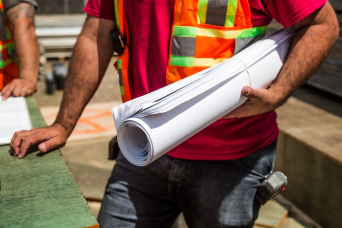

Why Should I Invest in Routine Maintenance
Routine and regular maintenance for your elevators may seem like an unnecessary expense. But if you really stop and think about it, scheduling regular service visits may actually save you time and money. Here’s why.
Optimal Functionality
As with most large, expensive equipment, regular maintenance is necessary to keep it functioning at its peak performance and to ensure that all pieces and parts continue working together for as long as possible. Most people wouldn’t dream of skipping oil changes, brakes, tires, belts, and other maintenance items on their cars. Elevators have oil, brakes, belts and rollers too! During regular maintenance, your service technician will keep everything lubricated and inspect and replace wear items. Waiting to do these things when the elevator stops working can cause major damage and require additional downtime and costly repairs. You could prevent a failure in the middle of the night or during the busiest rush of the day.
Ensure Safety and Compliance
Elevator equipment needs state required annual testing, and for certain types of equipment, 5 year testing in order to remain in compliance and to receive your certificate of operation. Murphy Elevator’s preventative maintenance programs include keeping your elevator’s state required testing up to date. Your service technician will also ensure your elevator is in compliance with state code requirements, routinely maintained, and free from issues that could cause breakdowns. Our maintenance plans include several levels of service to meet the needs of your equipment.
Regular maintenance also helps prevent common elevator malfunctions such as bad door operation, rough rides and poor leveling. Ensuring good leveling, smooth rides, and proper door operation keeps your building occupants safe from potential trip and fall hazards. These types of hazards are particularly dangerous to riders with poor mobility.
Building owners and managers should also be aware of new elevator mechanic licensing requirements. Many states require an elevator mechanics license to service and repair elevators. Every once in a while, we hear of building maintenance personnel or building electricians working on elevators as part of their job. It should go without saying that elevator work is extremely specialized and should only be attempted by trained professionals, regardless of state regulations. That said it is now in violation of the law in many states and could open up the building owner to serious liability.
Identify Need for Upgrades
As a building owner or property manager, you should know your elevators’ maintenance schedules. By keeping a detailed record of elevator service calls and the dates of maintenance, you can not only catch problems sooner, but you may also notice trends in malfunctions and downtime. An increase in service calls or decrease in parts availability could mean that it’s time for an upgrade or modernization of your elevators.
How long has it been since your last upgrade? Discuss your options with your service technician and ask about your elevators’ life expectancy. It may be time to put an end to extensive spending to keep outdated parts working by overhauling your elevator and bringing it up to the latest technology.